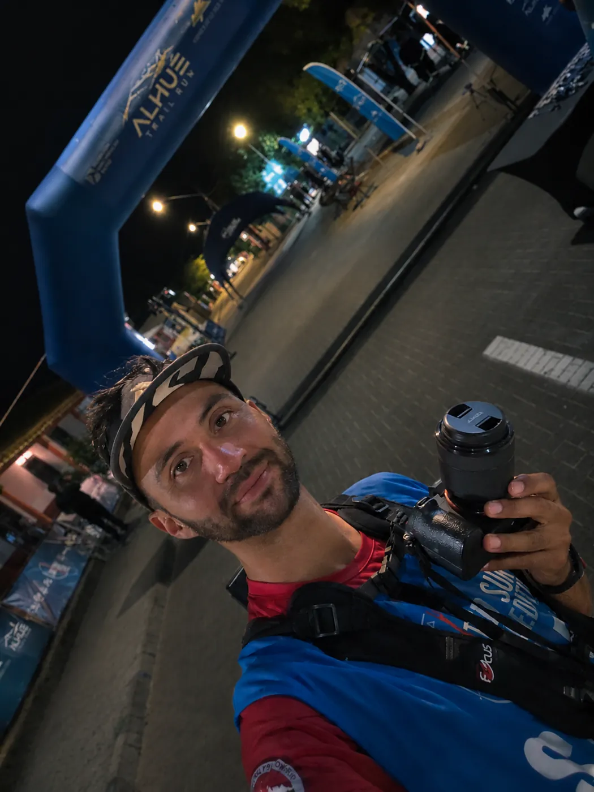
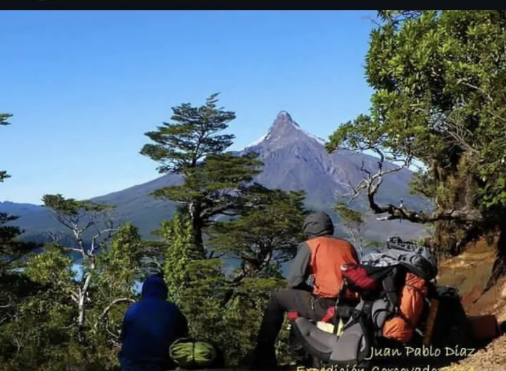
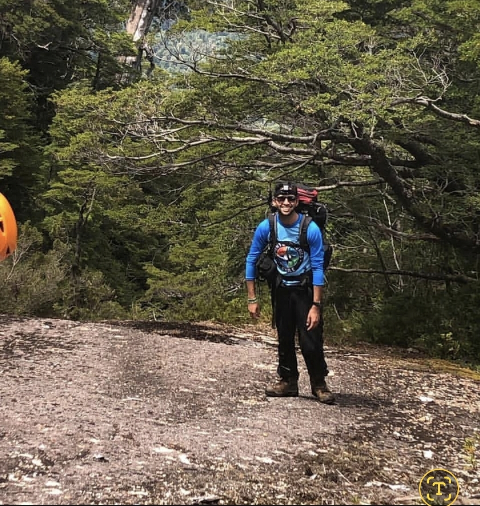
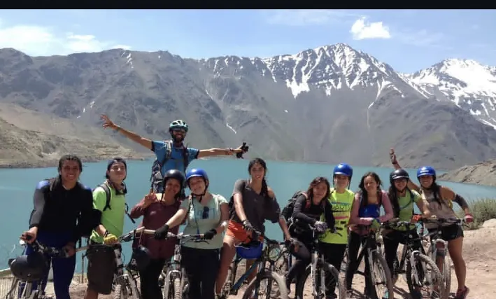

01
Terreno
Turismo territorial, espacios naturales, senderos, logística outdoor y actividades deportivas.
Territorio, experiencia y una forma de hacer las cosas.
Ingeniero en Expediciones y Ecoturismo. Trayectoria en turismo territorial, operaciones outdoor, producción deportiva, coordinación logística y gestión de proyectos.
Mi formación en turismo y mi experiencia en terreno sustentan una perspectiva territorial e integradora de los proyectos.
Cada iniciativa se desarrolla en un contexto particular, donde interactúan personas, comunidades, condiciones geográficas, recursos y organizaciones. Mi trayectoria incluye operaciones outdoor, gestión de espacios naturales, docencia, producción deportiva y coordinación logística. Utilizo herramientas y metodologías de gestión para conectar la planificación con las necesidades reales de ejecución.
Me interesa aportar una mirada integradora, adaptando las soluciones a los objetivos, recursos y condiciones de cada territorio.
Experiencia práctica, organización y adaptación de herramientas según las necesidades de cada contexto.
Turismo territorial, espacios naturales, senderos, logística outdoor y actividades deportivas.
Coordinación operativa, planificación, recursos, mejora de procesos y proyectos.
Uso práctico de herramientas digitales, registro de información, cronometraje deportivo y apoyo a procesos organizacionales.
Una selección de actividades y responsabilidades. Los períodos de colaboración por evento no implican dedicación continua.
Colaboraciones logísticas en competencias de aventura, orientación terrestre y trail running, con funciones variables antes, durante y después de cada evento.
Responsable directo del cronometraje electrónico en competencias deportivas; colaboraciones ocasionales vigentes, sin constituir actualmente el principal foco profesional.
Apoyo al proceso de modernización: aprendizaje y configuración básica de Odoo ERP, capacitación puntual de usuarios y colaboración en el desarrollo de la estrategia y estructura web.
Jefatura de guardaparques: coordinación de equipos, turnos y tareas de terreno, mantenimiento, atención de visitantes y apoyo a actividades educativas.
Docencia y apoyo académico en aula y terreno, con funciones de asistencia, coordinación y seguridad según las necesidades de cada asignatura.
Planificación, coordinación y ejecución de senderos turísticos con un equipo de tres personas y apoyos puntuales. Creación y administración de las cuentas de Instagram y Facebook del proyecto.
Experiencias de producción, registro y trabajo en terreno, acompañadas de fotografías documentales.

Participación en tareas logísticas y operativas de competencias, adaptando las funciones a las necesidades de cada evento, antes, durante o después de su realización.
Experiencia en eventos y terreno
Fotografía y video como herramientas complementarias para documentar actividades deportivas y experiencias outdoor, en una práctica que continúo desarrollando.
Ver registro audiovisual


Experiencia en cronometraje deportivo y gestión de resultados. Ver evidencia de experiencia ↗
Pontificia Universidad Católica de Chile · Clase Ejecutiva UC
Formación en fundamentos de inteligencia de negocios y toma de decisiones basada en información.Universidad del Desarrollo · 136 horas · Planificación y gestión de proyectos
Universidad San Sebastián · Formación en expediciones, turismo de naturaleza y operaciones en terreno
Formación complementaria en respuesta a emergencias en entornos remotos (WFR), primeros auxilios y operación RPAS.
Disponible para conversar sobre turismo, operaciones outdoor, producción deportiva, coordinación y proyectos.